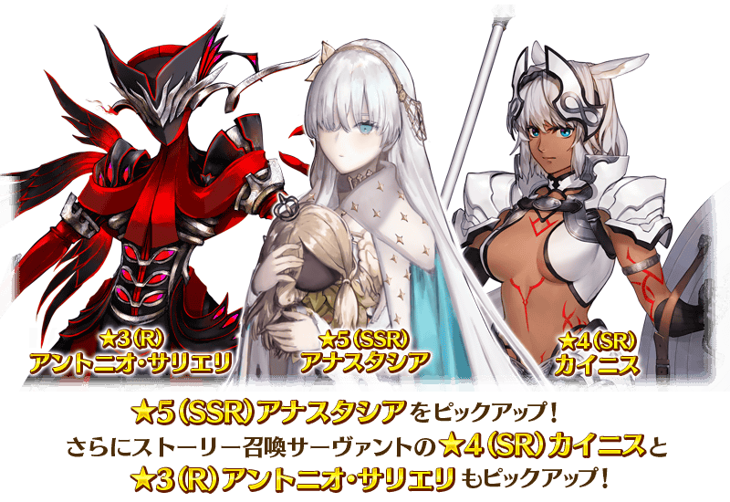
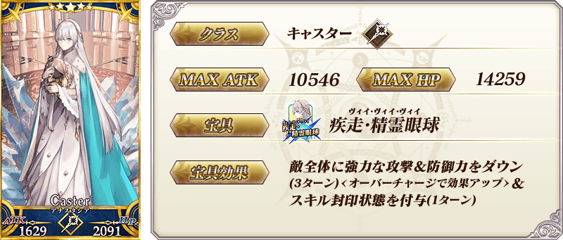
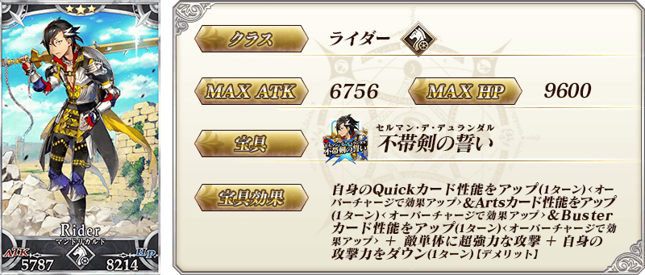
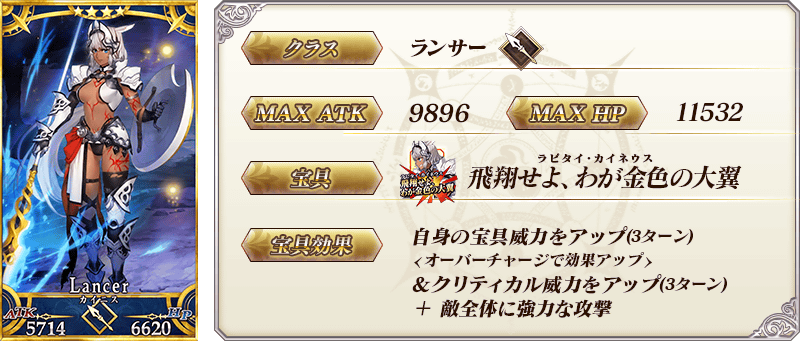
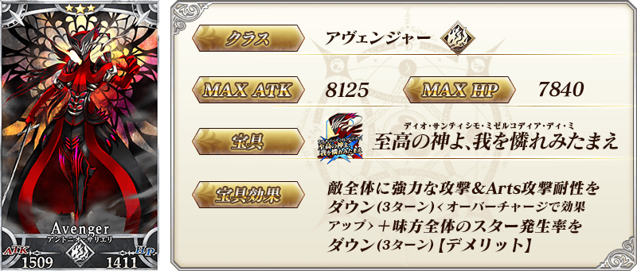
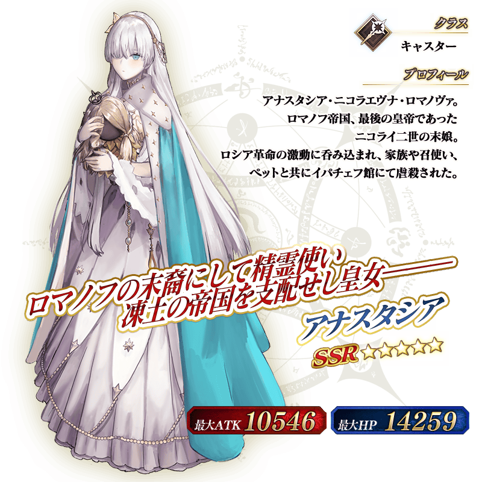
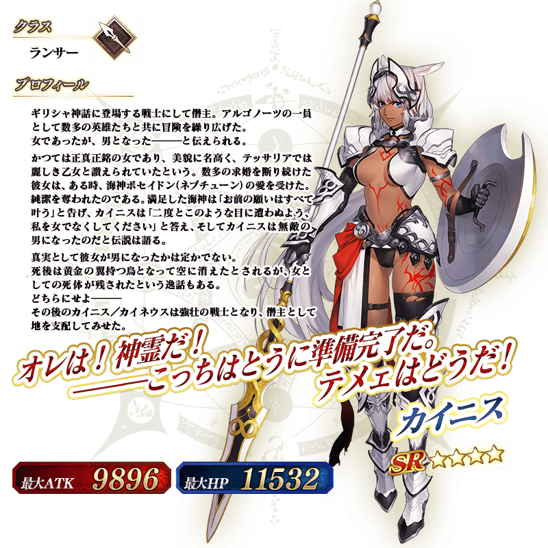

◆「幕間物語宣傳活動第16彈Pick Up召喚」期間◆
期間:2021年6月23日(三) 17:00～7月7日(三) 11:59
期間限定「幕間物語宣傳活動第16彈Pick Up召喚」舉辦！
從「幕間物語宣傳活動 第16彈」關聯從者之中4位從者Pick Up！

▼Pick Up從者
・★5(SSR)安娜塔西亞
・★3(R)曼迪卡爾多
▼故事召喚從者
・★4(SR)凱妮絲
・★3(R)安東尼奧・薩里耶利
Pick Up期間中，Pick Up對象從者的出現機率提升！
詳情請在聖晶石召喚畫面左下的召喚詳細確認。
11次召喚中確定1張★4(SR)以上和確定1位★3(R)以上的從者！ ※確定★4(SR)以上包含從者和概念禮裝。
◆有關從者的注意◆
※本召喚的Pick Up期間中，透過故事進行所追加的下述從者就算通過各章前也能入手。
・★4(SR)凱妮絲
・★3(R)安東尼奧・薩里耶利
※下述的從者在Pick Up期間結束後仍會在故事召喚被抽出。
・★5(SSR)安娜塔西亞
・★4(SR)凱妮絲
・★3(R)曼迪卡爾多
・★3(R)安東尼奧・薩里耶利
◆有關概念禮裝的注意◆
※請注意下述的概念禮裝在本召喚為抽出對象外。
・★5(SSR)担い手はここに孤り
・★4(SR)貴石の魔彈
・★4(SR)虚數属性
・★4(SR)願望の器
・★3(R)持たざる者
※2021年6月25日(五) 12:00以後，下述的概念禮裝也不會從故事召喚被抽出。
另外，本召喚中，2021年7月7日(三) 11:59前會被抽出。
・★4(SR)ガンド
・★4(SR)虚數魔術
・★4(SR)天使の詩
※就算2021年6月25日(五) 12:00以後，下述的概念禮裝會自教學召喚被抽出。
・★4(SR)ガンド
・★4(SR)虚數魔術
・★4(SR)天使の詩
※2021年6月25日(五) 12:00以後，下述的概念禮裝變成也無法從故事召喚被抽出，追加至友情點數召喚。
なお、本召喚では、2021年7月7日(三) 11:59會被抽出されます。
・★3(R)ノーブル・ピース

 ※上述「★3(R)曼迪卡爾多」的卡面為靈基再臨第3階段。
 ※上述「★4(SR)凱妮絲」的卡面為靈基再臨第1階段。


 ※上述「★4(SR)凱妮絲」的立繪為靈基再臨第1階段。
介紹在本召喚Pick Up的2位從者寶具演出！
【★5(SSR)安娜塔西亞】
【★4(SR)凱妮絲】
其他還有，「幕間物語宣傳活動 第16彈」同時舉辦！
關於詳情，請自下述橫幅確認。
■「幕間物語宣傳活動 第16彈」詳細情報